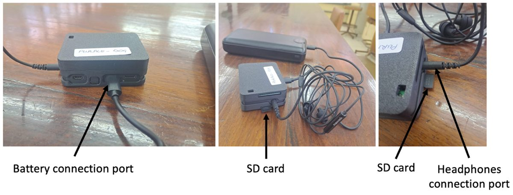

The recording files
At the end of a night the Portiloop leaves a folder of files: one large table of samples and a few small text files that describe the recording. This page shows where they are, what every column and setting means, how to copy them to your computer, and how to check in a few lines of Python that a night is usable, using the real tutorial night.
In this tutorial you will
- Know where a recording is saved (SD card or internal memory) and why the internal memory must not be used for real nights.
- Read a recording name and know which files to expect in its folder.
- Understand every column of the CSV file, how the numbers become microvolts, and what
detection,stimulationandstimulation_onmean exactly. - Go through the settings stored in
_metadata.jsonand the events of_leadoff.jsonand_stats.json. - Copy the files to your computer, download the tutorial dataset, and run a first quality check.
Where the files are saved
The Portiloop decides where to write each recording when you press Start. The rule is in constants.py:
def sd_card_detected():
"""
Whether the SD card is mounted and writable. The card can be inserted at any time (it is mounted by udev), so this
is checked again before each recording.
"""
return os.path.ismount(SD_CARD) and os.access(SD_CARD, os.W_OK)
def csv_path():
"""
Returns:
Path: the recording folder (created if needed): on the SD card when it is detected, in the home folder otherwise
"""
path = (SD_CARD if sd_card_detected() else HOME_FOLDER) / 'workspace' / 'recordings'- SD card mounted and writable:
/media/sd_card/workspace/recordings/. - Otherwise:
~/workspace/recordings/, in the home folder of the user that runs the software, on the internal memory of the device (/home/mendel/workspace, according to the README).
The check is made again at every Start (simple_gui.py, line 343), so a card inserted after the device was turned on is used from the next recording. The SD Card box of the Control tab only shows whether the card is detected; you cannot tick it yourself (Tutorial 03). The Advanced tab also shows a "Disk Usage" percentage: of the SD card when it is detected, otherwise of the disk the software runs from (simple_gui.py, lines 392 to 398).
For scale: the CSV of the tutorial night takes 585 MB for 7.4 hours, and that copy was rewritten with 3 decimals "to make the files smaller" ("Recording large CSV files in internal memory will quickly make your
portiloop-software README, section "SD card" [3]Portiloopunusable: the internal memory is quite small and recording CSVs in internal memory should never be done, except for quick testing. In case you inadvertently fill up yourPortiloopinternal memory, it will refuse to boot and you will have to reflash and reinstall the entire system."
docs/tools/make_tutorial_dataset.py), so the file the device writes is larger. The protocol's step "In the Control panel, make sure that the SD card is checked on" exists for this reason [4].Folder and file names
At Start, the Control Center builds the name of the recording from the Recording name of the Advanced tab, the date and time, and the condition:
self.time_started = datetime.now()
stim_str = "CONDB" if self.stim_on else "CONDA"
time_str = self.time_started.strftime('%Y-%m-%d_%H-%M-%S')
prefix = self.custom_exp_name or portiloop_ID
self.exp_name = f"{prefix}_{time_str}_{stim_str}.csv"
...
workspace_dir = csv_path() # the SD card may have been inserted since the start of the GUI
self.run_dict['filename'] = os.path.join(workspace_dir, self.exp_name.split('.')[0], self.exp_name)So every recording gets its own folder, and all its files share one stem, <name>_<YYYY-MM-DD_HH-MM-SS>_<CONDA|CONDB>:
- name: the Recording name you typed (the protocol suggests
CLAS_X, X being the participant number). If the field is empty, the hostname of the device is used: a phone screenshot in the lab's protocol showspurple-dog_2026-10-15_08-25-02_CONDAon the Control tab. - date and time: the moment Start was pressed, read from the device's clock (
datetime.now()), in the device's time zone. - CONDA or CONDB: the condition selected on the Control tab.
CONDBmeans sounds were played,CONDAmeans sham (Tutorial 01).
The tutorial night is clas-tutorial_2026-11-15_04-01-29_CONDB: started on 15 November 2026 at 04:01:29 by the device's clock, in Cond B.
- The condition is in the file name (and in
_metadata.json, keystimulate). Whoever handles the files can unblind the night. Blinding must be organised by people (Tutorial 01). - Do not type the participant's name. The name ends up in the folder, every file name and the metadata. The tutorial dataset had to be renamed for this reason (see below). Use a code.
- The time is only as good as the device's clock. "Sync Clock with Browser" sets the clock from the phone (
sudo date -u -s @<browser time>,simple_gui.py, lines 537 to 542), but nothing in the code sets the time zone, so the name uses whatever time zone the device is configured with. We do not know which zone the device of the tutorial night used: do not read 04:01 as the local bedtime. Write the real start time in your lab notes.
The folder of a recording made with the slow-oscillation pipeline contains:
CLAS_7_2026-11-15_22-41-03_CONDB/ (example name)
├── CLAS_7_2026-11-15_22-41-03_CONDB.csv the samples: one row per sample
├── CLAS_7_2026-11-15_22-41-03_CONDB_metadata.json all the settings, written at Start
├── CLAS_7_2026-11-15_22-41-03_CONDB_leadoff.json lead-off events, written at Start, rewritten at each event
└── CLAS_7_2026-11-15_22-41-03_CONDB_stats.json sampling statistics, written when the recording ends| File | Written | Code |
|---|---|---|
.csv | during the whole recording; only if "Save recording locally" is ticked | capture.py 274 to 283, output.py |
_metadata.json | at Start (the full settings dictionary) | capture.py 185 to 196, 302 |
_leadoff.json | at Start (empty list), then after every lead-off event; only when lead-off detection is on and the input is the amplifier | capture.py 317 to 334 |
_stats.json | when the capture process reports its statistics, at the end of the recording | capture.py 392 to 407 |
load_recording of the analysis package puts them back on one timeline (Tutorial 06).The CSV file
The .csv file is a plain text table: one header line, then one line per sample (250 lines per second at the protocol's 250 Hz). For the CLAS pipeline the columns are:
| Column | Content | Unit |
|---|---|---|
raw_ch1 to raw_ch8 | the signal of each ADS1299 input, unfiltered. In the CLAS protocol montage: ch1 ECG1 (black), ch2 ECG2 (brown), ch3 EOG1 (red), ch4 EOG2 (orange), ch5 EMG (yellow), ch6 Cz (green), ch7 Fz (blue), ch8 Fpz (purple), all referenced to the white electrode behind the right ear | µV |
detection | 1 on the sample where the detector fired, 0 elsewhere | 0 or 1 |
stimulation | 1 on the sample where a sound was played (Cond B) or would have been played (Cond A) | 0 or 1 |
stimulation_on | 1 while detection is running, 0 while it is paused | 0 or 1 |
Two things are not in the file. There is no time column: the time of row i (counting from 0 after the header) is i / 250 seconds after Start. There are no filtered signals: the default setting is "record_filtered": False (constants.py, line 106). The montage is not stored either: the file says raw_ch6, never "Cz". Keep the montage of each study in your notes.
From amplifier numbers to microvolts
The ADS1299 amplifier delivers a 24-bit integer (a "code") per channel and per sample. The Portiloop converts it before writing it (capture_backend.py, lines 202 to 220, and config_hardware.py, lines 1 to 2):
ADS_GAIN = 24
ADS_LSB = (2 / ADS_GAIN) / (2**24 - 1) # needs to be multiplied by VREF
...
def filter_scale(value, vref):
return value * 1e6 * vref * ADS_LSBWith the reference voltage "vref": 4.5 V stored in the metadata:
One step of the converter is therefore about 0.022 µV, far below the noise of scalp EEG. The codes go from −223 to 223 − 1, so the largest values the file can contain are −187,500.011 µV and +187,499.989 µV: the input range of the ADS1299 at gain 24 (± VREF / gain = ±187.5 mV). These are exactly the minimum and maximum found in the tutorial night. A sample at these values means the amplifier was saturated ("at the rail"): typically an electrode that came off.
detection, stimulation and stimulation_on, exactly
detectionis 1 on the single sample where the "Sleep slow oscillations (upstate)" detector fires: the filtered detection channel shows a slow oscillation that meets the fixed criteria (peak-to-peak above 75 µV, negative part beyond 40 µV, 125 to 1500 ms below zero, less than 1000 ms above zero), at the moment its predicted up-state peak is reached (custom_detectors.py, lines 172 to 176 and 242 to 255; explained in Tutorial 01).stimulationis 1 where the stimulator was asked to play the sound. With Min, Max and Inter-stim delay at 0 (the protocol's values), no delay mechanism is used andstimulationis written straight from the detection (custom_stimulators.py, lines 215 to 247); with a delay it marks the delayed delivery. In Cond A the column is filled in exactly the same way, but no sound is played: it marks the sham events. Nothing in the CSV tells the two conditions apart.stimulation_onis 1 whenever detection is running, that is when it is not paused by the "Stimulation starts after" delay nor by the lead-off protection (capture.py, lines 464 to 480 and 494 to 495). It does not depend on the condition: it is also 1 during a Cond A night.
custom_detectors.py, line 267), so its stimulations came about 16 to 20 ms (4 to 5 samples) early. This was fixed on main on 2026-11-26 (commit e4959f1): devices updated after that date stimulate later by that amount. Note the software version (commit) of each study night in your log; the files themselves only say "software_version": "0.2.0".stimulation_on column is 1 when the UI stimulation switch is active and 0 otherwise" [3]. The code does something else: it is 1 when detection runs, in both conditions. Use stimulation_on to know when the device was able to stimulate, and the file name or stimulate in the metadata to know the condition.In the tutorial night (Cond B, "Stimulation starts after" 25 minutes):
detectionandstimulationeach contain 1,930 ones, on the same samples (no delay was set);stimulation_ongoes from 0 to 1 at minute 25.04 (the 25 minute delay; the Control Center checks it every 10 s, so the start can be up to about 10 s late) and back to 0 at minute 373.36, for the rest of the night, when the lead-off protection paused detection;- the first stimulation is at minute 30.9 and the last at minute 373.0; the median interval between two stimulations is 3.10 s, and the shortest 0.328 s.
Explore the real file
The explorer below shows real rows of the tutorial night, copied from the file exactly as written, around six moments of the night. Click any column name or value to see what it means; click the plot to move the table to that moment.
The settings: _metadata.json
At Start, the Portiloop writes the complete dictionary of settings it runs with to <stem>_metadata.json (dump_metadata(config_dict, config_dict, "metadata"), capture.py, line 302). It is the only record of how the night was recorded: the pipeline, the detection channel, the mains filter, the volume, the delay, the condition, and the impedances measured at the last check. Read it before analysing a night, and compare it with the protocol.
The explorer lists the real metadata of the tutorial night. The only change from the file written by the device is filename, which was replaced when the night was renamed for publication.
filter_settings.power_lineis 60 Hz. The protocol says "Double-check that the Notch filter frequency (Hz) is set to 50" because the study runs where the mains is 50 Hz; this test night was recorded with 60 Hz, which is also the software default (constants.py, line 90). For a study night, a 60 in this field means the notch did not match the mains.- The impedances were measured: ch1 177.5, ch2 156.0, ch3 78.3, ch4 11.6, ch5 4.4, ch6 20.6, ch7 2.3, ch8 8.5 kΩ, reference connected. With the colour thresholds of the Check tab (green under 10 kΩ, yellow 10 to 25 kΩ, red from 25 kΩ;
impedance_display.py, line 18), ECG1, ECG2 and EOG1 were red, EOG2 and Cz yellow, and EMG, Fz and Fpz green. The protocol expects red ECG channels: "It is normal that the impedance levels of ch1 (ECG1) and ch2 (ECG2) are not good, because they are far away from the reference electrode" [4]. impedance_check_timeis the same second as the start time in the file name (04:01:29). The time saved is when the last check finished (simple_gui.py, line 290), and Start stops a running check; the most likely explanation is that the Live check was still running when Start was pressed. We have not verified it.- The night was recorded with the software of Portiloop v2.3 (version 0.2.0): its 38 keys are those this code writes. Other software versions may write other keys.
Lead-off events: _leadoff.json
During the recording the Portiloop watches for electrodes that come off (Tutorial 04; portiloop/src/core/leadoff.py). In short: every 10 s it screens the last 2 s of each channel; a channel with more than 800 µV of mains interference, or more than 20% of its samples at (or within 5% of) the limit, is suspect; after two suspect screenings in a row a short DC lead-off test (24 nA) confirms it; a confirmed electrode is removed from the bias loop so that it does not degrade the other channels. Each decision is an event, and the list of events is written to <stem>_leadoff.json at Start and again after every event:
{
"events": [
{"event": "disabled", "channels": [6], "sample": 5600000, "time": "2026-11-15T10:14:53.512", "reason": "open"}
]
}| Field | Meaning |
|---|---|
event | one of the five event types below (leadoff.py, lines 59 to 63) |
channels | the channels concerned, counted from 1 (6 = raw_ch6) |
sample | the number of samples recorded when the decision was made: a CSV row index (from 0), the point from which the event applies |
time | the device's clock, ISO format with milliseconds (capture.py, line 324) |
reason | only for disabled: "open" (the electrode failed the DC test) or "mains" (it passed, but its mains interference was above 5000 µV) |
| Event | What happened | Effect on detection and stimulation |
|---|---|---|
not_connected_at_start | the 2 s DC test at Start found no electrode on these channels; they are left out of the bias loop | if the detection channel (Cz) is listed: paused for the whole recording |
disabled | an electrode came off during the night and was removed from the bias loop for the rest of the recording (it is still recorded) | if it is the detection channel: paused for the rest of the recording |
suspect_not_confirmed | a channel looked floating but passed the DC test; it is not tested again for 60 s | none |
reference_or_bias_off | all the channels in use looked floating at once: the reference (white) or bias (grey) electrode is probably off; nothing is disabled, no test for 600 s | paused until the matching recovery |
reference_or_bias_recovered | two clean screenings in a row after reference_or_bias_off | resumes |
Sources: leadoff.py, lines 1 to 74 and 220 to 296; capture.py, lines 317 to 334. The pauses set stimulation_on to 0. The Control Center does not show these events: they are only in this file and in the messages of the software.
stimulation_on falls to 0 at minute 373.36, 14 s later, for good. That fits a disabled event on channel 6 (two suspect screenings 10 s apart, then a 1.5 s test), but without the file we cannot confirm which event it was. The analysis package reads _leadoff.json to mark the affected samples as missing (read_leadoff_periods); without it, the analysis must catch these samples by itself (Tutorial 06).Sampling statistics: _stats.json
When the recording ends, the capture process sends its statistics and the Portiloop writes them to <stem>_stats.json (capture.py, lines 392 to 407):
| Key | Meaning |
|---|---|
os_time | duration of the acquisition measured by the operating system clock, in seconds |
nb_steps | number of samples captured |
os_step_duration, os_sampling_frequency | os_time / nb_steps and its inverse: the real sampling rate as seen by the system clock |
nb_lost_samples, lost_samples | how many, and which CSV rows (0 for the first sample), repeat the previous sample because a conversion was missed |
How a sample gets "lost" depends on the Clock setting (capture.py, lines 134 to 152). With the protocol's "Coral" clock, the amplifier runs at twice the sampling rate and a software timer reads it; when the timer is late and reads the same conversion twice, the row is a copy of the previous one and its index goes to lost_samples. With the "ADS" clock, missed conversions are filled with the previous sample. Either way, the row count stays right and the timing of the night is preserved, but a few rows are duplicates.
The tutorial night has no _stats.json either. Counting rows identical to the previous one on all 8 channels gives 1,970 rows (0.03% of the night, spread over every hour), which is what lost samples look like with the "Coral" clock. Since the file is missing, we cannot check that they are exactly the rows it would have listed.
If the device loses power or crashes, the end of the recording never comes: expect _stats.json to be missing (we have not tested it). The CSV is written in blocks while the night goes on, so the samples recorded until then should be in it.
Retrieving the files
From the SD card (the protocol's way)
The end of the protocol is: "On the phone, in the Portiloop Control Center, press the Stop button. Turn off the Portiloop: by pressing the Power button (only one short press). Unplug the earphones. Remove the SD card." [4] The README adds: "Remove the SD card only when no recording is running" [3]. Then read the card on a computer and copy the whole folder of each recording from workspace/recordings/, all files together.

- The README does not say how to format the card. It only asks that it have a partition (checked with
lsblk), and the Coral installation mounts it with the file system typeauto(Makefile, line 120). We have not checked which formats work. - The protocol says one short press of the Power button turns the device off; the README says "press the
Powerbutton for 3 seconds again" [3]. We have not verified which is right on the current hardware: wait until the light is off before removing the card.
Over the network
The Control Center has no download button. Two other routes exist, neither described for this purpose:
- SSH. The README documents logging in from a computer on the same network:
ssh mendel@your-hostname.local(usermendel, the default user of the Coral board). From there, the files are in/media/sd_card/workspace/recordings/. Copying withscpis not in the README; the usual command would be the one below. We have not tested it. - The Jupyter server at
192.168.4.1:8080(README, "Jupyter UI") has the standard Jupyter file browser, which can download files. This is a Jupyter feature, not Portiloop code, and it is password protected.
# connected to the Portiloop's Wi-Fi, the device is 192.168.4.1
scp -r mendel@192.168.4.1:/media/sd_card/workspace/recordings/CLAS_7_2026-11-15_22-41-03_CONDB ._metadata.json and _leadoff.json from the name of the CSV, and orders the files of one night by the date and time in their names. Keep the original card contents until the copy is checked (the next section takes a minute).The tutorial dataset
The tutorial night is a real overnight test recording made by the lab with the CLAS protocol montage and the "Sleep slow oscillations (upstate)" pipeline, in Cond B. It is published so that you can run every step of tutorials 05 to 09 on it.
Download the tutorial night (zip, about 200 MB)
| File in the zip | Size | Content |
|---|---|---|
clas-tutorial_2026-11-15_04-01-29_CONDB.csv | 585 MB | 6,654,051 rows (7.39 h at 250 Hz), the 11 columns described above |
clas-tutorial_2026-11-15_04-01-29_CONDB_metadata.json | 2 kB | the settings (above) |
clas-tutorial_2026-11-15_04-01-29_CONDB_nanosleepnet.csv | 102 kB | not written by the device: automatic sleep stages per 30 s epoch, computed offline (Tutorial 06) |
How it differs from what the device wrote (docs/tools/make_tutorial_dataset.py):
- the recording name was replaced by
clas-tutorial, because "the recording name chosen at the bedside often contains the participant's name", andfilenamein the metadata was changed to match; the date, time and condition were kept; - the samples were rewritten with 3 decimals (0.001 µV, much finer than the 0.022 µV step of the converter, so nothing is lost);
- there is no
_leadoff.jsonand no_stats.json: they were not retrieved from the device.
Unzip it anywhere. The commands of this page and of the next tutorials assume that you run Python in the folder that contains the unzipped folder clas-tutorial_2026-11-15_04-01-29_CONDB/.
A first quality check in Python
Before any analysis, check that the night is complete and usable. The script below needs only Python with pandas and NumPy (pip install pandas). It reads the whole file (about 600 MB of memory for a 7 hour night) and prints the companion files, the duration, the stimulations, when detection ran, and for every channel its impedance at the last check, the share of samples at the amplifier limit and the share of samples at exactly 0 (a channel disabled at Start records 0).
import json
from pathlib import Path
import numpy as np
import pandas as pd
folder = Path("clas-tutorial_2026-11-15_04-01-29_CONDB") # the recording folder
stem = folder.name
for suffix in ("metadata", "leadoff", "stats"):
print(f"{stem}_{suffix}.json:", "present" if (folder / f"{stem}_{suffix}.json").exists() else "MISSING")
metadata = json.loads((folder / f"{stem}_metadata.json").read_text())
data = pd.read_csv(folder / f"{stem}.csv")
fs = metadata["frequency"]
# 1. Duration and sampling
print(f"\n{len(data):,} rows at {fs} Hz = {len(data) / fs / 3600:.2f} h")
raw = data[[f"raw_ch{i}" for i in range(1, 9)]]
print("rows identical to the previous row:", int((raw.diff() == 0).all(axis=1).sum()))
# 2. Stimulations and stimulation_on
stim = np.flatnonzero(data["stimulation"] == 1)
print(f"stimulations: {len(stim)} (first at {stim[0] / fs / 60:.1f} min, last at {stim[-1] / fs / 60:.1f} min)")
print("same samples as detection:", np.array_equal(stim, np.flatnonzero(data["detection"] == 1)))
on = data["stimulation_on"].to_numpy()
switches = np.flatnonzero(np.diff(on)) + 1
print("stimulation_on changes at minute:", [f"{s / fs / 60:.1f} ({on[s - 1]}->{on[s]})" for s in switches])
# 3. Channels: impedance at the last check, samples at the amplifier limit, samples exactly 0
names = ["ECG1", "ECG2", "EOG1", "EOG2", "EMG", "Cz", "Fz", "Fpz"] # montage of the CLAS protocol
railed = raw.abs() >= 187_000
minute = np.arange(len(raw)) // (60 * fs)
mostly_railed = railed.groupby(minute).mean() > 0.5 # minutes with more than half the samples at the limit
table = pd.DataFrame({
"electrode": names,
"kOhm": [metadata["impedances_kohm"][f"ch{i}"] for i in range(1, 9)],
"state": metadata["channel_states"],
"% at limit": (railed.mean() * 100).round(2),
"railed minutes": mostly_railed.sum(),
"from minute": [mostly_railed.index[m].min() if m.any() else "" for _, m in mostly_railed.items()],
"% zero": ((raw == 0).mean() * 100).round(2),
})
print()
print(table.to_string())
print("\nreference:", metadata["impedances_kohm"]["REF"], "| detection channel:", metadata["channel_detection"],
"| notch:", metadata["filter_settings"]["power_line"], "Hz | sound played:", metadata["stimulate"])On the tutorial night it prints (about 7 s on a desktop computer):
clas-tutorial_2026-11-15_04-01-29_CONDB_metadata.json: present
clas-tutorial_2026-11-15_04-01-29_CONDB_leadoff.json: MISSING
clas-tutorial_2026-11-15_04-01-29_CONDB_stats.json: MISSING
6,654,051 rows at 250 Hz = 7.39 h
rows identical to the previous row: 1970
stimulations: 1930 (first at 30.9 min, last at 373.0 min)
same samples as detection: True
stimulation_on changes at minute: ['25.0 (0->1)', '373.4 (1->0)']
electrode kOhm state % at limit railed minutes from minute % zero
raw_ch1 ECG1 177.5 simple 0.00 0 0.0
raw_ch2 ECG2 156.0 simple 0.00 0 0.0
raw_ch3 EOG1 78.3 simple 0.00 0 0.0
raw_ch4 EOG2 11.6 simple 0.00 0 0.0
raw_ch5 EMG 4.4 simple 0.00 0 0.0
raw_ch6 Cz 20.6 simple 11.98 55 373 0.0
raw_ch7 Fz 2.3 simple 0.00 0 0.0
raw_ch8 Fpz 8.5 simple 0.00 0 0.0
reference: connected | detection channel: 6 | notch: 60 Hz | sound played: TrueHow to read it, line by line:
| Check | Tutorial night | Worry if |
|---|---|---|
| Companion files | _leadoff.json and _stats.json missing (not retrieved) | files are missing from a night you copied yourself: copy again; a missing _stats.json also suggests the recording did not end normally |
| Duration | 7.39 h | much shorter than the time in bed (a crash, a battery, a Stop then Start: look for a second folder); 10.00 h means the automatic 10 h limit stopped it |
| Repeated rows | 1,970 (0.03%) | a large share: the capture process was often late |
| Stimulations | 1,930, from minute 30.9 to 373.0 | none in a Cond B night (detection channel, pipeline, electrode off at Start?); in Cond A they are sham events and should be there too |
stimulation_on | on at minute 25.0 (the delay), off at 373.4 for good | it never turns on; it turns off early (lead-off pause: look at the detection channel) |
| Samples at the limit | Cz: 11.98%, 55 minutes from minute 373 | the detection channel at the limit during sleep: those minutes have no usable EEG and no stimulation |
Samples at 0, state | none, all channels simple (enabled) | 100% zeros and disabled: the electrode was OFF at the last impedance check and the channel was not recorded |
| Settings | notch 60 Hz | anything that differs from the protocol (here, the 50 Hz notch of the study protocol) |
Exercises
From a value to the amplifier
The first row of the tutorial night has raw_ch6 = −20,250.947 µV. Which ADS1299 code produced it, and how far is it from the limit of the amplifier?
Answer
−20,250.947 / 0.0223517 ≈ −906,012 (a whole number, as it must be). The limit is −223 = −8,388,608, that is −187,500.011 µV: Cz is at about 11% of the range. Its value then drifts during the night (about +115,600 µV at minute 300), and from minute 373.12 it sits at the limit.
How long could the device stimulate?
Using the numbers on this page, for how many minutes was stimulation_on 1 in the tutorial night, and what fraction of the recording is that? Why did it start and why did it stop?
Answer
From minute 25.04 to 373.36: 348.3 minutes, 78.5% of the 443.6 minute recording (the share of ones in the column is 5,224,822 / 6,654,051 = 0.785). It started at the end of the "Stimulation starts after" delay of 25 minutes (sleep_timeout in the metadata) and stopped when the lead-off protection paused detection after Cz reached the amplifier limit.
Cond A or Cond B?
A colleague sends you only the CSV file of a night, renamed night3.csv. Can you tell whether sounds were played?
Answer
No. The columns are filled in the same way in both conditions: stimulation marks the sounds in Cond B and the sham events in Cond A, and stimulation_on is 1 whenever detection runs. Only the original name (_CONDA or _CONDB) and the key stimulate of _metadata.json tell. This is why files must be copied with their names and companions, and also why handling them can unblind a study.
A night on the internal memory
An assistant reports that the SD Card box was not ticked last night, but the recording ran. Where is the file, and what should be done before the next night?
Answer
In ~/workspace/recordings/<stem>/ on the internal memory (/home/mendel/workspace/recordings). Copy it off the device (SSH or the Jupyter file browser), then delete it from the internal memory, since a full internal memory can stop the device from booting. Before the next night, insert the card and check that the box is ticked (it is refreshed every 5 s and when a tab is opened).
References
- Valenchon N, Bouteiller Y, Jourde HR, et al. (2022). The Portiloop: a deep learning-based open science tool for closed-loop brain stimulation. PLOS ONE 17(8): e0270696. doi:10.1371/journal.pone.0270696
- Texas Instruments. ADS1299-x Low-Noise, 4-, 6-, 8-Channel, 24-Bit, Analog-to-Digital Converter for EEG and Biopotential Measurements, datasheet SBAS499C (revised January 2017). ti.com/lit/gpn/ADS1299
- Portiloop software for Portiloop v2.3 (branch main; the code and line numbers cited on this page are those of commit 917f1f3, which recorded the tutorial night), README. github.com/Portiloop/portiloop-software; the code cited on this page is in
portiloop/src. - CLAS protocol of the lab (internal document, not public): sections III "Turn on the Portiloop and start the recording" and IV "End of overnight recording and cleaning".